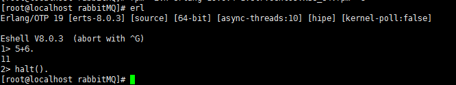
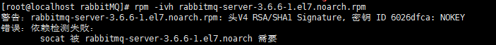
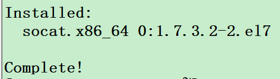
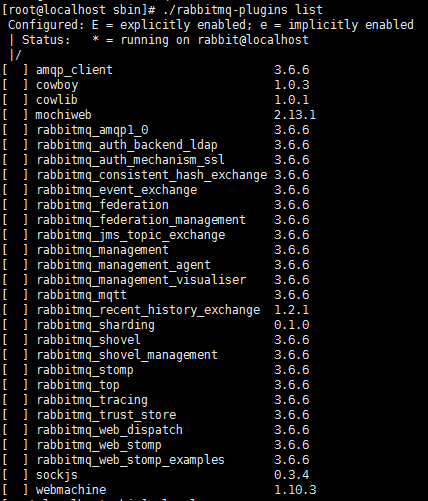
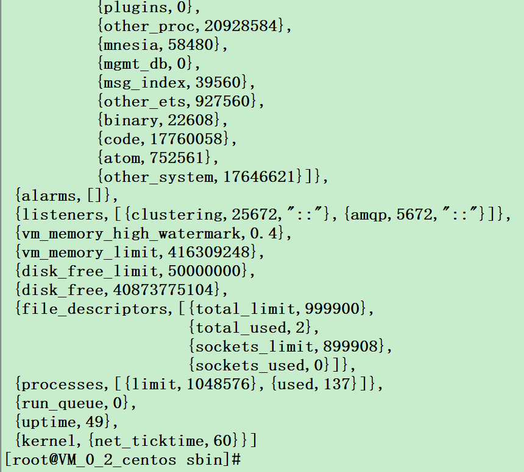

第一、下载erlang和rabbitmq-server的rpm:
wget http://www.rabbitmq.com/releases/erlang/erlang-19.0.4-1.el7.centos.x86_64.rpm
wget http://www.rabbitmq.com/releases/rabbitmq-server/v3.6.6/rabbitmq-server-3.6.6-1.el7.noarch.rpm
erlang是安装rabbitMQ的支持依赖，要先安装erlang
第二、安装erlang:
rpm -ivh erlang-19.0.4-1.el7.centos.x86_64.rpm
测试erlang是否安装成功：

第三、安装rabbitmq:
rpm -ivh rabbitmq-server-3.6.6-1.el7.noarch.rpm

在安装rabbitmq时提示依赖socat，安装socat：
yum install socat

然后再次安装rabbitmq
第四、启动和关闭:
/sbin/service rabbitmq-server stop #关闭
sbin/service rabbitmq-server start #启动
/sbin/service rabbitmq-server status #状态
第五、cd 到/sbin目录下:
./rabbitmq-plugins list #列出rabbitMQ所有配置

如果提示错误，检查rabbitMQ是否启动
./rabbitmqctl status #检查客户端状态

第六、其他
运行如下的命令，增加用户admin，密码admin
[root@localhost sbin]# ./rabbitmqctl add_user admin admin
Creating user "admin" ...
...done.
[root@localhost sbin]# ./rabbitmqctl set_user_tags admin administraotr
Setting tags for user "admin" to [administraotr] ...
..done.
[root@localhost sbin]# ./rabbitmqctl list_users
Listing users ...
admin [administraotr]
guest [administrator]
...done.
第七、扩展参考
[Erlang 0086] RabbitMQ 集群: 从零开始